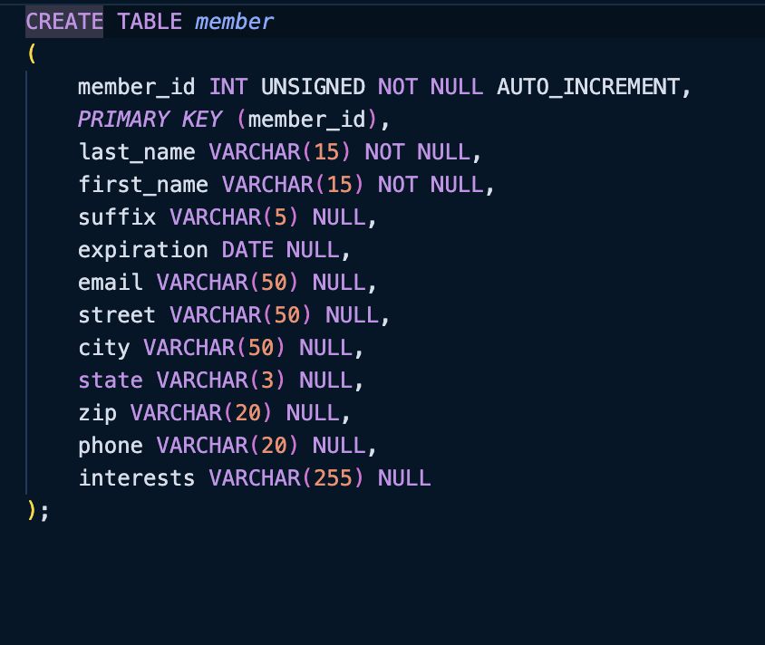
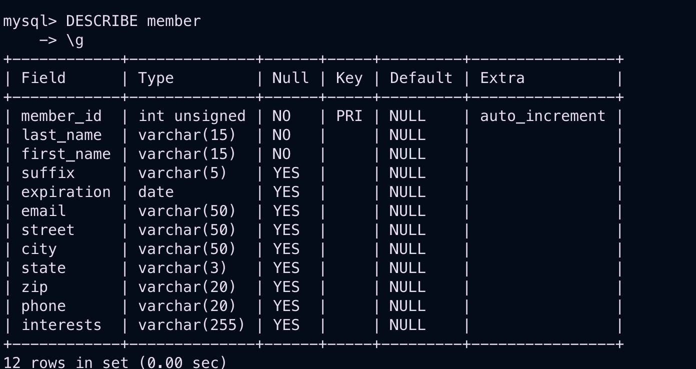

This is a opensource software, that does Relation Data Base Management System(RDBMS)
This is the programing language that is used to create and operate CRUD operation on database
Command: mysql -p -u user_name
orCommand: mysql -h host_name -p -u username - This is if the host is not a local host
orCommand: mysql --host=host_name -p --user=user_name - Another way to log in to client program
orCommand: mysql -h host_name -p -u user_name database_name - Log directly into a database
You will enter the Client program offered by mysql
Command: CREATE USER 'user_name'@'host_name' IDENTIFIED BY 'password'
Command: GRANT ALL ON database_name.* TO 'user_name'@'localhost'
This gives permission to the user_name over the database database_name
Note: Even if the database is not created yet, the grant will not create the database but later on if created it gives permission
Command: SELECT NOW(); - GIves Time
Command: SELECT USER(); - Gives the user that logged in
COmmand: SELECT VERSION(); - Version of mysql
Command: SELECT DATABASE(); - This gives the database in use, if no database is not selected then NULL will be returned
Command: CREATE DATABASE database_name - THis is the database owned by the user by which the client program is accessed
The database in the same system shouldn't have same name
Command: USE database_name - You can now affect the database
Command: SELECT DATABASE(); - This will show which database is in use, if no database then it returns NULL
Command: \c - this when eneterd clears the present command
Command: \g - this can be used inplace of semi-colon to end the command
Command: \G - This is also like a semi-colon but the output will be inverted
To ensure that we have proper and useful data inputs for the database we have to plan before on what we plan to insert into our table
What is the datatype of the input information, ease of use for the future case
For Example: If we have to take name of a customer, its lot better to take the name in one column, but its useful to store the name in three columns,
First name (including the middle name), last name and Suffix
Command: CREATE TABLE table_name (table_specs); - In table_specs we can have the columns and thre datatypes
Ex: 
-->id INT UNSIGNED NOT NULL AUTO_INCREMENT, - This AUTO_INCREMENT feature is the most powerful feature of MySQL
-->PRIMARY KEY(id); - This helps in relation of the table
Primary Key enables the index of the id given, which helps us identify the table
Command: DESCRIBE table_name
Ex: 
DESCRIBE is useful when inputing values, and also to look up the order of the column names, as we have to insert based on the default column order
Similar ways of using DESCRIBE table_name
SHOW is used to check particular data like
Command: SHOW FIELDS FROM table_name LIKE '%name' - the "LIKE" used here is called a clause, the %
used is a wildcard, means anything that ends with name
in the fields will be shown
COmmand: SHOW DATABASES; - This will show all the databases of the current USEr
Command: SHOW TABLES; - This will show the tables of the current DATABASE in USE
USING DIRECT COMMAND_LINE WITHOUT mysql Command Line
Command: mysqlshow -p -u user_name - This will show all the databases of the user_name
Command: mysqlshow -p -u user_name database_name - This will show the tables of the database database_name